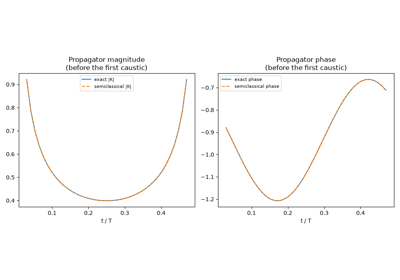
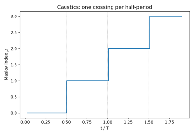
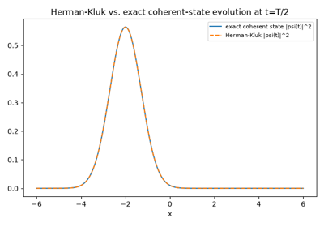

Breakthroughs in Semiclassical Physics#
“The most important application of the quantum theory… is that in which one lets Planck’s constant go to zero.” – paraphrasing the spirit of the WKB program
Semiclassical mechanics asks what quantum mechanics looks like in the
limit \(\hbar\to0\) without simply discarding quantum effects –
instead, it reorganizes them entirely around classical trajectories,
actions, and periodic orbits. This chronology traces that program behind
physicskit.semiclassical, from the 1920s WKB
approximation to Heller’s 1984 discovery that individual chaotic
eigenstates still remember the classical orbits a naive random-matrix
picture says they should have forgotten, with a pointer to the
corresponding implementation in this package at each stop.
1926 – The WKB Approximation#
Gregor Wentzel, Hendrik Kramers, and Leon Brillouin (building on earlier work by Harold Jeffreys) independently found the leading term of an asymptotic expansion of the Schrodinger equation in powers of \(\hbar\): away from classical turning points, the wavefunction is well approximated by \(\psi(x)\sim p(x)^{-1/2}\exp(\pm i\int p\,dx/\hbar)\), an oscillation whose local wavelength and amplitude both track the classical momentum \(p(x)=\sqrt{2m(E-V(x))}\). Matching this oscillatory solution through the breakdown region at each turning point (via the Airy function) costs a phase of \(\pi/4\), and demanding the wavefunction close consistently around a full oscillation gives the Bohr-Sommerfeld quantization rule that had, until then, been an ad hoc postulate of the old quantum theory rather than a consequence of wave mechanics.
Implementation: physicskit.semiclassical.core.wkb.wkb_wavefunction()
builds exactly this approximate wavefunction;
bohr_sommerfeld_energies()
implements the resulting quantization condition, reproducing the exact
harmonic-oscillator spectrum to machine precision.
References: G. Wentzel, “Eine Verallgemeinerung der Quantenbedingungen für die Zwecke der Wellenmechanik,” Z. Phys. 38, 518-529 (1926); H. A. Kramers, “Wellenmechanik und halbzahlige Quantisierung,” Z. Phys. 39, 828-840 (1926); L. Brillouin, “La mécanique ondulatoire de Schrödinger: une méthode générale de resolution par approximations successives,” C. R. Acad. Sci. 183, 24-26 (1926); H. Jeffreys, “On Certain Approximate Solutions of Linear Differential Equations of the Second Order,” Proc. London Math. Soc. 23, 428-436 (1925).
1928 – Van Vleck’s Semiclassical Propagator#
John Van Vleck showed that the WKB idea extends from stationary states to the full quantum propagator: the leading \(\hbar\to0\) approximation to \(K(x_f,t;x_i,0)\) is built entirely from a single classical trajectory connecting \(x_i\) to \(x_f\) in time \(t\), weighted by a prefactor set by that trajectory’s stability – how sensitively the endpoint depends on the launch momentum. Cecile Morette’s 1951 path-integral derivation later gave the same object a cleaner name, the Van Vleck-Morette determinant, and a systematic route to higher dimensions.
Implementation: physicskit.semiclassical.core.propagators.propagate_trajectory_monodromy_action()
integrates the classical trajectory together with its monodromy matrix;
van_vleck_propagator_1d()
assembles the propagator from it, matching the exact quantum propagator
of the free particle and the harmonic oscillator to better than
\(10^{-5}\).
plot_classical_trajectory_on_wigner()
overlays that same classical \((q,p)\) trajectory directly on the
exact quantum Wigner distribution, showing the classical orbit tracing
the ridge the quantum phase-space density concentrates on.
References: J. H. Van Vleck, “The Correspondence Principle in the Statistical Interpretation of Quantum Mechanics,” Proc. Natl. Acad. Sci. 14, 178-188 (1928); C. Morette, “On the Definition and Approximation of Feynman’s Path Integrals,” Phys. Rev. 81, 848-852 (1951).

The Van Vleck-Morette semiclassical propagator
1958 – Keller’s Quantization Condition and Maslov’s Topological Index#
Joseph Keller reformulated Bohr-Sommerfeld quantization for classically integrable systems with more than one degree of freedom, showing that the naive phase-space integral needs a correction term set by the number of caustics the trajectory crosses – turning points in 1D, or focal points more generally – each contributing a further \(-\pi/2\) to the phase. This “corrected Bohr-Sommerfeld” or Einstein-Brillouin-Keller (EBK) condition already contains, for the periodic-orbit case, the phase-counting rule that Viktor Maslov would later place on rigorous, coordinate-independent footing: in his 1965 monograph (English translation 1972), Maslov showed this phase count is a topological invariant of the trajectory – the Maslov index – rather than an artifact of the coordinates used to compute it, valid far beyond the periodic-orbit setting Keller started from.
Implementation: physicskit.semiclassical.core.propagators.count_caustics()
counts sign changes of the monodromy matrix’s \(\partial q_t/\partial p_0\)
element along a trajectory to extract exactly this index.
References: J. B. Keller, “Corrected Bohr-Sommerfeld Quantum Conditions for Nonseparable Systems,” Ann. Phys. 4, 180-188 (1958); V. P. Maslov, Théorie des Perturbations et Méthodes Asymptotiques (Dunod, Paris, 1972; Russian original, Moscow State University Press, 1965); V. P. Maslov and M. V. Fedoriuk, Semi-Classical Approximation in Quantum Mechanics (Reidel, Dordrecht, 1981).

The Maslov index: caustics and Keller’s quantization condition
1971 – The Gutzwiller Trace Formula#
Martin Gutzwiller derived a semiclassical formula for the quantum density of states of a general – in particular, classically chaotic – system directly from its classical periodic orbits, with no reference to any quantum wavefunction at all: each isolated periodic orbit contributes an oscillatory term to \(g(E)\) at a frequency set by its action and an amplitude set by its linear instability. For chaotic systems, whose periodic orbits proliferate exponentially with period, the resulting sum is only conditionally convergent – famously “the most divergent series you’ll ever want to use” – yet reproduces real quantum spectra with striking accuracy when truncated sensibly.
Implementation: physicskit.semiclassical.core.gutzwiller.gutzwiller_density_of_states()
implements the exact bound-1D specialization of the trace formula (via
Poisson summation of the EBK spectrum), reconstructing the harmonic
oscillator’s Bohr-Sommerfeld levels from its classical action and period
alone; gutzwiller_amplitude_from_monodromy()
gives the general isolated-unstable-orbit stability amplitude the full
multi-dimensional formula uses.
References: M. C. Gutzwiller, “Periodic Orbits and Classical Quantization Conditions,” J. Math. Phys. 12, 343-358 (1971).
1976 – The Berry-Tabor Formula for Integrable Systems#
Michael Berry and Michael Tabor showed that the Gutzwiller trace formula’s assumption of isolated periodic orbits fails for integrable systems – where, since every energy has a whole torus of orbits rather than one isolated orbit, the trace formula must be replaced by a different (still exact, for linear tori) sum organized around rational winding numbers. The distinction between the Gutzwiller (chaotic, isolated orbits) and Berry-Tabor (integrable, orbit families) regimes remains the basic dichotomy of semiclassical spectral theory.
Connection: the one-dimensional trace formula in this package is the
\(f=1\) special case where the distinction is moot (a single degree
of freedom has no room for chaos), which is exactly why
gutzwiller_density_of_states()
can be exact rather than merely leading-order in \(\hbar\).
References: M. V. Berry and M. Tabor, “Closed Orbits and the Regular Bound Spectrum,” Proc. R. Soc. Lond. A 349, 101-123 (1976).
1984 – Herman and Kluk’s Frozen Gaussians#
Michael Herman and Edward Kluk proposed replacing the single classical trajectory of Van Vleck theory with an entire phase-space family: launch one fixed-width (“frozen”) Gaussian wavepacket from every point of a phase-space grid, propagate each one along its own classical trajectory, and sum the results with a monodromy-built prefactor and classical action phase. Unlike a single semiclassical trajectory, this multi-trajectory (“initial value representation”) sum needs no troublesome root-finding to connect fixed endpoints, generalizes cleanly to many degrees of freedom, and – for any potential at most quadratic in position – is exact.
Implementation: physicskit.semiclassical.core.propagators.herman_kluk_propagate_wavepacket()
sums exactly such a grid of Numba-compiled classical trajectories,
built from frozen_gaussian_1d()
and herman_kluk_prefactor().
References: M. F. Herman and E. Kluk, “A Semiclassical Justification for the Use of Non-Spreading Wavepackets in Dynamics Calculations,” Chem. Phys. 91, 27-34 (1984).

Herman-Kluk frozen-Gaussian wavepacket propagation
1984 – Heller’s Discovery of Quantum Scars#
Eric Heller, numerically diagonalizing the Bunimovich stadium billiard – a paradigm chaotic system – found that a small fraction of its eigenstates were not the featureless, ergodically-spread blobs that random-matrix universality had led theorists to expect: instead they showed a clear, robust enhancement of probability density along the path of one particular unstable classical periodic orbit. These “scars” are not a violation of quantum ergodicity (which holds for almost every eigenstate as \(\hbar\to0\)) but a finite-\(\hbar\) imprint of the same periodic orbits that weight the Gutzwiller trace formula’s sum – a direct, visible link between individual eigenstates and classical chaos.
Implementation: physicskit.semiclassical.systems.scarring.bouncing_ball_energies()
and bouncing_ball_orbit_points()
concern the stadium billiard’s most famous scarred family;
scar_enhancement()
quantifies the effect directly in position space, and
husimi_projection_1d()
gives the phase-space (Husimi) view Heller himself used to first see it.
References: E. J. Heller, “Bound-State Eigenfunctions of Classically Chaotic Hamiltonian Systems: Scars of Periodic Orbits,” Phys. Rev. Lett. 53, 1515-1518 (1984).